Siemens Healthineers
WerkstudentData analytics and dashboarding, bringing information into focus.
Backend developer & data science student
I'm Erfan Yousefi. I connect software engineering with data science to build useful systems and uncover what the data has to say.
Engineering × Data × Curiosity

From backend to bigger questions.
A little about me
My experience spans backend systems, database integrations, and analytics. Alongside studying Data Science at FAU, I'm exploring machine learning and the mathematics behind it.
Data Science @ FAU
Software & analytics
01 / The journey so far
From building backend systems to making data easier to understand.
Data analytics and dashboarding, bringing information into focus.
Implemented database integrations and helped digitalize business processes.
Developed backend functionality with ASP.NET, applying Clean Architecture principles and design patterns.
Developed a student course registration system and automated registration based on predefined criteria.
Worked on an English institute's learning management system, with backend architecture in C# and ASP.NET Core.
Supported system administration and developed internal tools.
02 / My toolkit
A foundation in software engineering, with an expanding perspective on data.
The logic behind the experience. Building the systems that make things work.
Giving information structure, and connecting it to the applications that need it.
From web foundations to content and learning management systems.
Exploring data, collaborating on code, and keeping the work moving.
03 / Never stop learning
A growing collection of learning across development, machine learning, and mathematics.
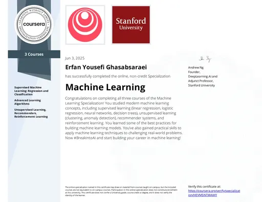
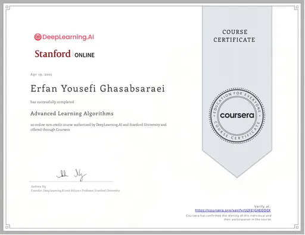
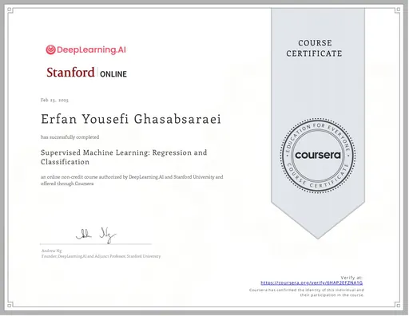
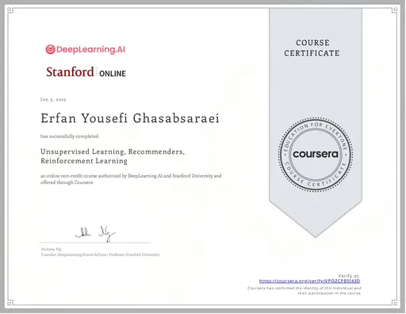
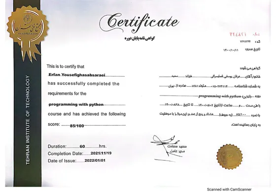
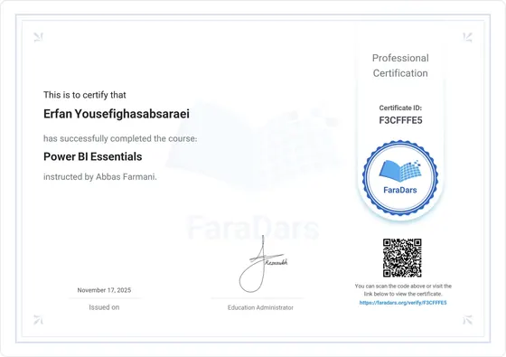
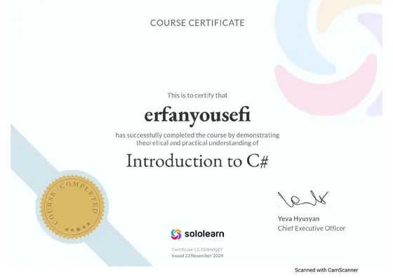
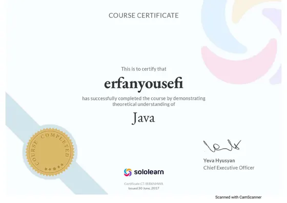
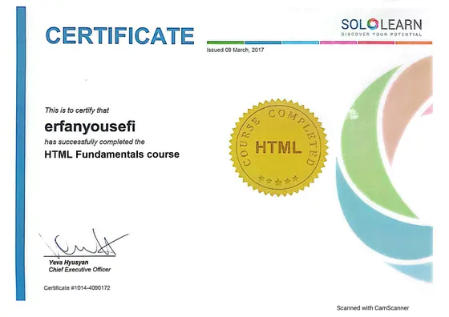
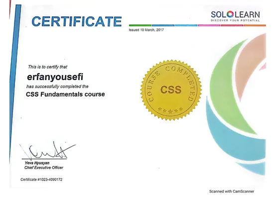
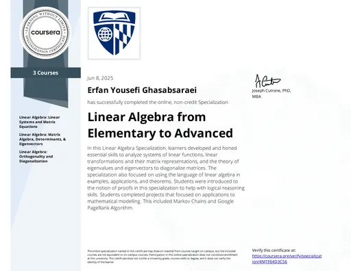
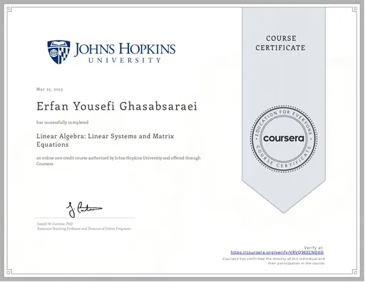
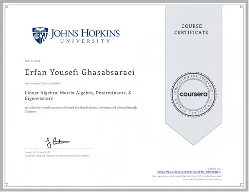
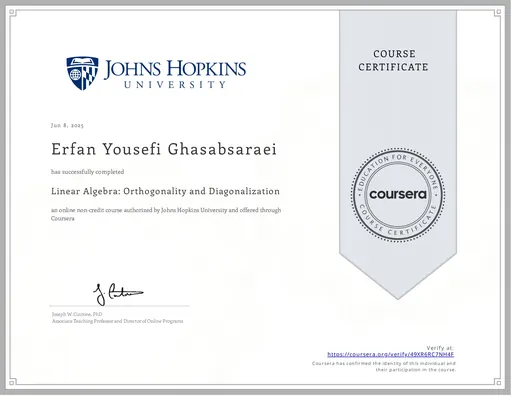
Good things start with a conversation
Have an idea, a question, or a shared curiosity?
I'd love to hear from you.